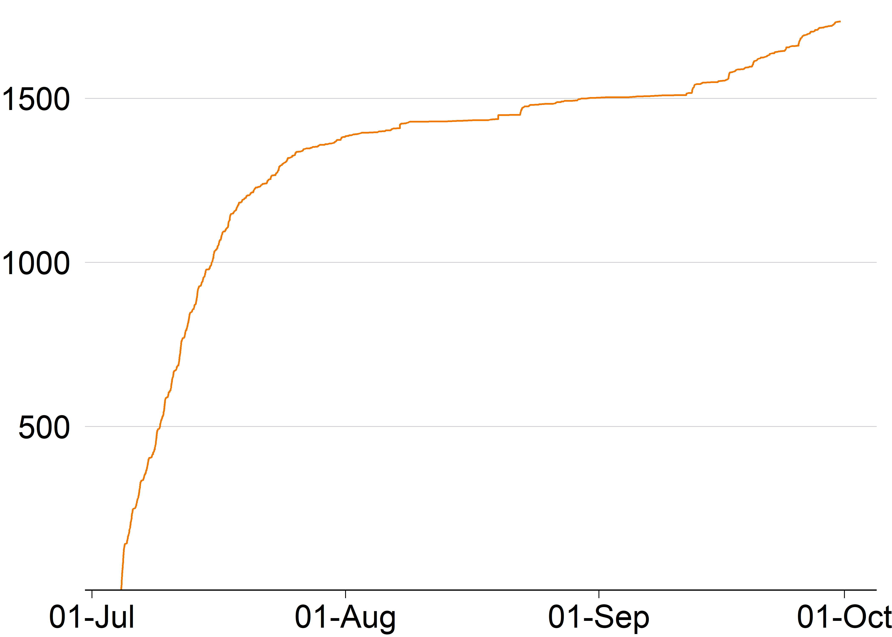

Making it count: Improving primary school maths
Analysis of Grattan Institute’s survey of primary school teachers
Import data
We first import the data straight from Qualtrics following the instructions here. We also export a dated version of the survey, for file management.
Filter to valid sample
We filter out:
Anyone whose responses are flagged by Qualtrics as suspicious (i.e. Q_RecaptchaScore is below 0.5). This is typically because of the speed at which they respond, or ‘straight lining’ (i.e. clicking the same radio buttons in a single column).
Anyone who did not complete more than one substantive (i.e. non-demographic) question.
Through this process, we lose 269 responses. This leaves us with 1,253 valid responses.
We also check for duplicates, using Qualtrics duplicate flag. This pulls out respondents who try reattempt the survey from the same IP address. We can see if they are duplicates by looking through their answers manually.
We now check the number of valid responses over time, in Figure 1.
Demographics
We create tables to determine the representativeness of the sample. We compare these again the latest available data here and here.
Teacher characteristics
| Response | N | % | N | % |
|---|---|---|---|---|
| Sex | ||||
| Female | 1,030 | 82% | 129,560 | 82% |
| Male | 208 | 17% | 28,207 | 18% |
| Prefer not to say | 14 | 1% | ||
| Something else | 1 | 0% | ||
| Total | 1,253 | 100% | 157,767 | 100% |
| Main teaching role | ||||
| Generalist teacher | 678 | 54% | ||
| No teaching load | 265 | 21% | ||
| Tutor | 99 | 8% | ||
| Specialist subject teacher | 87 | 7% | ||
| Relief teacher | 68 | 5% | ||
| Other | 56 | 4% | ||
| Total | 1,253 | 100% | ||
| Leadership responsibilities* | ||||
| Principal | 174 | 13% | ||
| Deputy principal | 137 | 10% | ||
| Instructional leader | 305 | 23% | ||
| Team leader | 145 | 11% | ||
| Pastoral or wellbeing leader | 35 | 3% | ||
| Other leadership role | 143 | 11% | ||
| No leadership role | 400 | 30% | ||
| Total | 1,339 | 100% | ||
| Years of teaching experience | ||||
| <5 years | 71 | 6% | 8,173 | 18% |
| 5-9 years | 139 | 11% | 6,461 | 14% |
| 10-20 years | 358 | 29% | 12,480 | 28% |
| 20+ years | 685 | 55% | 17,584 | 39% |
| Total | 1,253 | 100% | 44,698 | 100% |
| Note: Population data is taken from ACARA (2023) and AITSL (2023). AITSL's years of experience buckets are only an approximate match for our buckets. | ||||
| * Options add up to more than 1253 because respondents could select multiple leadership responsibilities. | ||||
School characteristics
| Response | N | % | N | % |
|---|---|---|---|---|
| Stage of schooling | ||||
| Primary | 1,031 | 82% | 138,613 | 88% |
| Combined | 159 | 13% | 13,074 | 8% |
| Special | 63 | 5% | 6,080 | 4% |
| Total | 1,253 | 100% | 157,767 | 100% |
| Sector | ||||
| Catholic | 305 | 24% | 27,307 | 17% |
| Government | 794 | 63% | 109,372 | 69% |
| Independent | 154 | 12% | 21,088 | 13% |
| Total | 1,253 | 100% | 157,767 | 100% |
| Jursidiction | ||||
| Australian Capital Territory | 39 | 3% | 2,936 | 2% |
| New South Wales | 241 | 19% | 46,753 | 30% |
| Northern Territory | 15 | 1% | 1,963 | 1% |
| Queensland | 163 | 13% | 32,598 | 21% |
| South Australia | 72 | 6% | 10,649 | 7% |
| Tasmania | 46 | 4% | 3,282 | 2% |
| Victoria | 578 | 46% | 43,059 | 27% |
| Western Australia | 99 | 8% | 16,526 | 10% |
| Total | 1,253 | 100% | 157,767 | 100% |
| Level of advantage or disadvantage | ||||
| A fairly even mix of advantaged and disadvantaged students | 520 | 42% | 108,716 | 31% |
| Mostly advantaged | 457 | 36% | 155,345 | 45% |
| Mostly disadvantaged | 276 | 22% | 81,996 | 24% |
| Total | 1,253 | 100% | 346,057 | 100% |
| Remoteness | ||||
| Metropolitan | 752 | 60% | 247,899 | 71% |
| Regional | 342 | 27% | 62,251 | 18% |
| Rural | 132 | 11% | 29,475 | 8% |
| Remote | 27 | 2% | 7,786 | 2% |
| Total | 1,253 | 100% | 347,411 | 100% |
| School size | ||||
| Up to 50 students | 45 | 4% | 3,539 | 3% |
| 51 to 100 students | 62 | 5% | 4,021 | 3% |
| 101 to 200 students | 165 | 13% | 13,869 | 10% |
| 201 to 300 students | 185 | 15% | 18,855 | 14% |
| 301 to 400 students | 211 | 17% | 23,613 | 17% |
| 401 to 500 students | 189 | 15% | 21,307 | 15% |
| 501 to 600 students | 144 | 12% | 17,299 | 12% |
| 601 to 700 students | 74 | 6% | 13,726 | 10% |
| 701 to 800 students | 62 | 5% | 8,003 | 6% |
| 801 to 900 students | 37 | 3% | 4,640 | 3% |
| 901 to 1000 students | 25 | 2% | 3,842 | 3% |
| More than 1,000 students | 37 | 3% | 5,852 | 4% |
| Total | 1,236 | 100% | 138,566 | 100% |
Weighting the responses
Our survey represents a sample from the total population of teachers and principals. To reduce the biases of our estimates, we weight responses
To weight responses, we use the same method as that employed by (Social Research Centre 2023).
Best practice would involve a two-step process (Kalton and Flores-Cervantes 2003). The first step is reduce biases caused by non-coverage of the population and non-response (for example, teachers not on Facebook). The second step is to align weighted sample estimates with external data about the target population.
We cannot do this first step, as we lack numerical data about the selection mechanisms which would or would not cause people to respond to our survey. (Social Research Centre 2023) similarly could not calculate base weights in their survey of educators.
We include the following variables in weighting:
Gender
Years of experience
State and territory
School type
School sector
School-level of advantage.
School size
We cannot include the following categories:
Role (e.g. principal, classroom teacher): AITSL’s public datasets do not distinguish between primary and secondary. I have sent a data request to try get the split of leadership roles for primary schools.
Geography: AITSL and ACARA match a school’s postcode with the ABS’s Australian Statistical Geography Standard. We asked teachers about their school’s location. I am not confident enough in the concordance between perception data and matched postcode data to weight by this variable.
We had to make some transformations to the data to weight it. Namely:
Gender: In its school staff dataset, ACARA randomly assigns people who identify as a gender other than Male or Female to one of Male or Female. We use this method too.
School size: There were 17 survey respondents who did not mention their school’s size. I have imputed a school size for these respondents.
We can compare the results of weighting the datasets.

Please note that the remaining charts throughout this file are yet to be updated with appropriate weights.
References
Kalton, Graham, and Ismael Flores-Cervantes. 2003. “Weighting Methods.” Journal of Official Statistics 19 (2): 81.